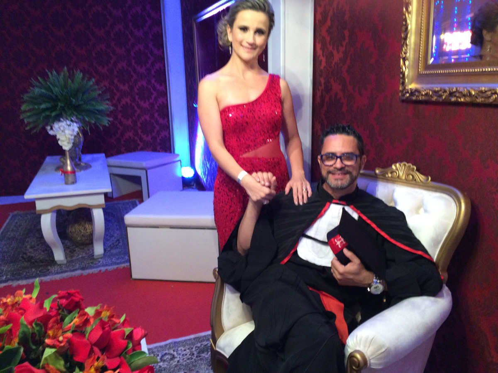
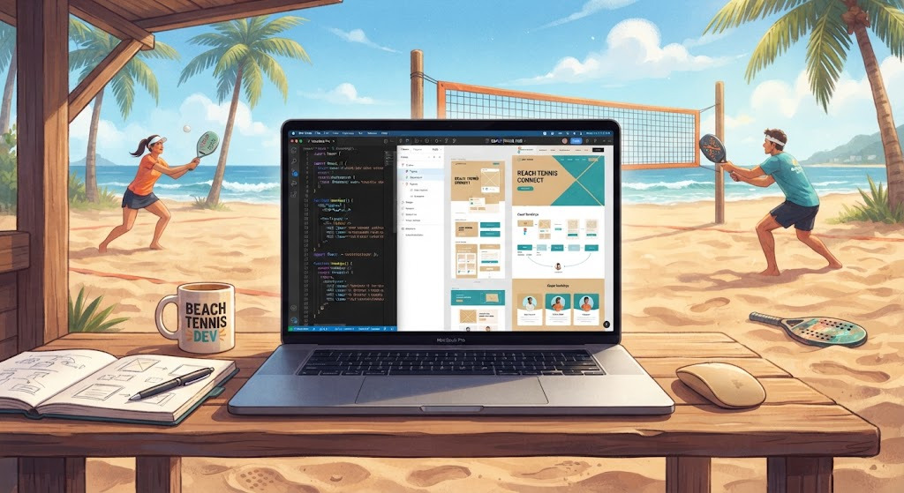

Marcelo Batalha
"Minha jornada profissional é marcada pela versatilidade e pela busca constante por novos aprendizados em várias áreas. Comecei minha carreira como arte-finalista na Editora LIR e, posteriormente, atuei como professor particular de matemática, física e química, desenvolvendo uma forte base de comunicação e lógica. Em 2003, ingressei na Polícia Rodoviária Federal (PRF), onde atuei por diversos anos como palestrante. Em 2015, me graduei como Bacharel em Direito pela UNC e, em 2018, fui certificado como adestrador de cães farejadores de drogas, armas e munições do órgão federal. Em 2022, paralelamente à carreira pública, reencontrei minhas raízes criativas ao iniciar no universo do audiovisual. Foi nos cursos de videomaker que descobri minha verdadeira paixão: contar histórias através de vídeos, especializando-me em edição e pós-produção com o DaVinci Resolve. Mais recentemente, decidi unir o audiovisual ao desenvolvimento tecnológico, capacitando-me como Desenvolvedor Frontend. Esse passo me permite não apenas dar vida aos meus projetos de vídeo na internet, mas também construir do zero os meus próprios espaços digitais."
Minhas Habilidades
Adestramento de cães
Editoração em Clipes
Produção de vídeos
Formação
Esporte que pratico atualmente
Beach Tennis
Projeto em Desenvolvimento
Produção de Sites (Hobby)

Minhas Skills
ADESTRAMENTO DE CÃES
100%
PROUDUÇÃO DE VÍDEOS
100%
EDITORAÇÃO DE VÍDEOS
100%
JOGADOR DE BEACH TENNIS
9,99%